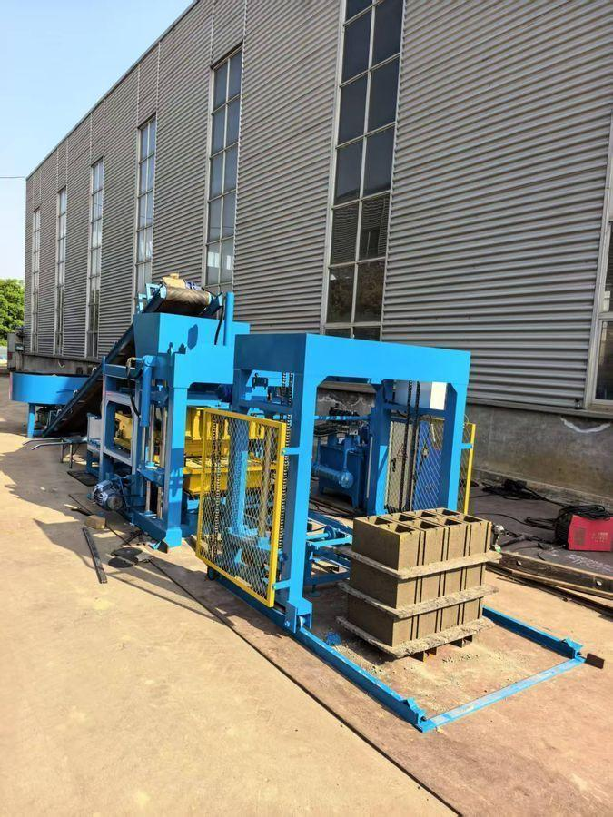
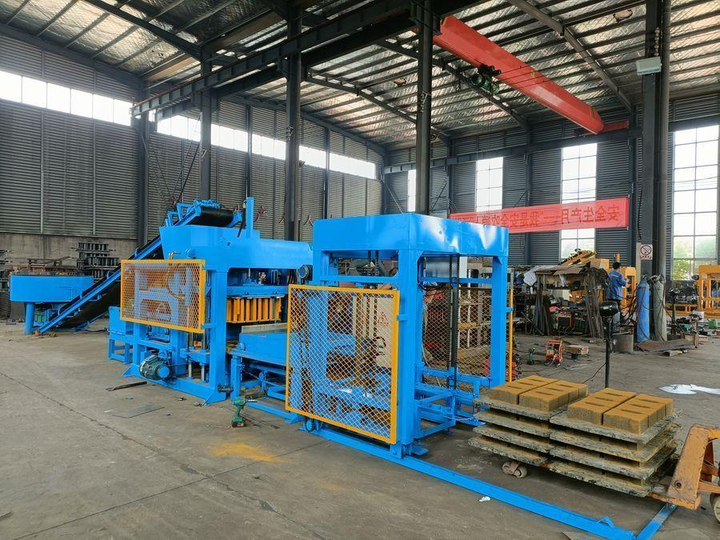
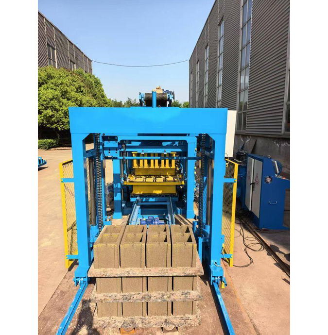
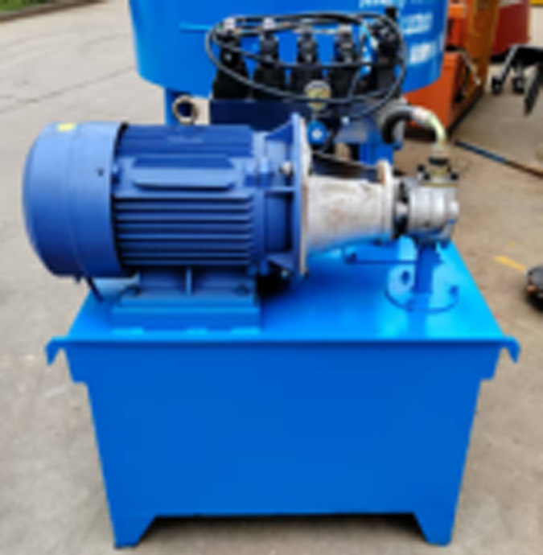
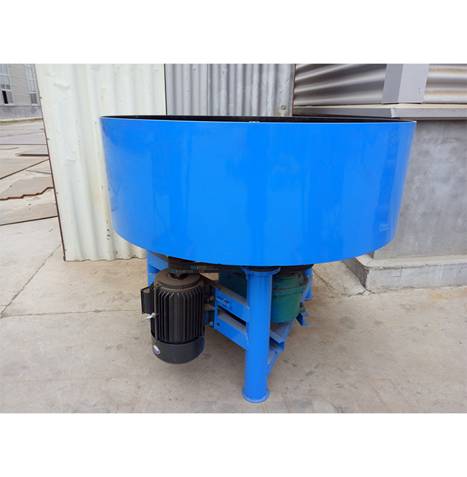
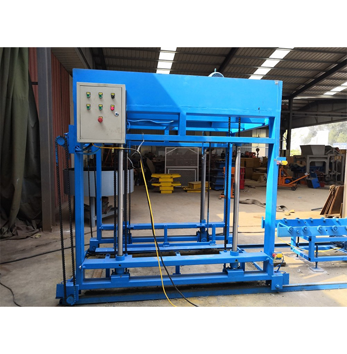
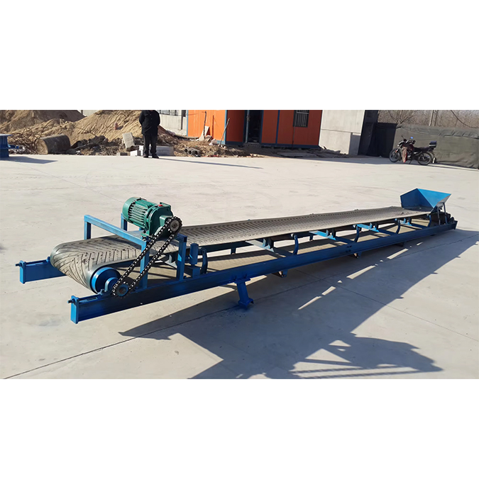

QT4-18 Lini Kamili ya Uzalishaji wa Hydrauliki Otomatiki
Mfano wetu mkuu. QT4-18 ni press ya kamili otomatiki ya hydrauliki yenye udhibiti wa PLC — opereta anapiga kitufe kimoja, mashine hulisha malighafi, inabonyeza, inatoa moldini, na kupanga rundo peke yake. Mfumo wa hydrauliki wa shinikizo la juu hutoa matofali ya kujilimbikizia na ya hourdi yanayokidhi viwango vya Ulaya na SABS vya Afrika Kusini.

Kwa Nini QT4-18 Inaongoza Safu
- Kiwango cha Juu cha Utomatiki — ulishaji otomatiki + usambazaji otomatiki wa palette hupunguza kazi ya mikono kwa kiasi kikubwa
- Udhibiti wa PLC wa Juu — mfumo wa udhibiti wa PLC uliojumuishwa unawezesha utomatiki kamili na mizunguko ya uzalishaji yenye ufanisi
- Ubonyezaji na Nguvu Bora — mtetemo wa ubonyezaji wa mwelekeo wima hutoa matofali yanaweza kupangwa rundo la tabaka 3 hadi 5
- Uwezo wa Kubadilika Usio na Kifani — badilisha moldi ili kuzalisha matofali ya shimo, imara, hourdi, na ya kujilimbikizia
Lini Kamili ya Uzalishaji — Vipengee 5
QT4-18 huletwa kama lini kamili ya uzalishaji: mashine kuu + kituo cha hydrauliki + mchanganyiko wa pan + mtambo wa kupanga rundo + ukanda wa conveyor. Hapa chini ni vipimo vya kiufundi vilivyothibitishwa vya kila kipengee.
① Mashine Kuu (QTJ4-18)
| Kigezo | Thamani |
|---|---|
| Patio kwa palette | 400 × 200 × 200 mm, vipande 4 / moldi |
| Nguvu iliyokadiriwa | 10,8 kW |
| Muda wa mzunguko | sekunde 20 – 25 |
| Uzito jumla | 2 500 kg |
| Uwezo wa uzalishaji | 4 000 – 12 000 vipande / siku (kutegemea aina ya tofali) |
| Ukubwa wa mashine kuu | 3,65 m (L) × 2,00 m (W) × 2,10 m (H) |
| Ukubwa wa palette | 880 × 550 × 20 mm |
② Kituo cha Hydrauliki
| Kigezo | Thamani |
|---|---|
| Nguvu iliyokadiriwa | 11 kW |
| Uzito jumla | 370 kg |
| Ukubwa wa jumla | 0,95 m (L) × 0,95 m (W) × 1,15 m (H) |
③ Mchanganyiko wa Pan (JQ500, imejumuishwa)
| Kigezo | Thamani |
|---|---|
| Nguvu iliyokadiriwa | 7,5 kW |
| Kasi ya kuchanganya | 19 – 20 rpm |
| Muda wa mzunguko | dakika 5 / kundi |
| Uzito jumla | 680 kg |
| Uwezo wa kuchaji | 500 L |
| Ukubwa wa jumla | 1,50 m (L) × 1,50 m (W) × 1,16 m (H) |
④ Mtambo wa Kupanga Rundo
| Kigezo | Thamani |
|---|---|
| Nguvu iliyokadiriwa | 2,25 kW |
| Uzito jumla | 360 kg |
| Ukubwa wa jumla | 1,60 m (L) × 1,20 m (W) × 2,00 m (H) |
| Uwezo wa kupanga | palette 1 / mzunguko |
⑤ Ukanda wa Conveyor (6 m, imejumuishwa)
| Kigezo | Thamani |
|---|---|
| Nguvu | 1,1 kW |
| Uzito | 250 kg |
| Ukubwa | 600 cm (L) × 77 cm (W) × 70 cm (H) |
Uwezo wa Uzalishaji kwa Aina ya Tofali
Uzalishaji unategemea sana ukubwa na umbo la tofali. Hapa chini ni takwimu zilizothibitishwa kutoka majaribio yetu ya kiwandani.
| Aina ya Tofali | Ukubwa | Vipande / Moldi | Uzalishaji wa Kila Siku (zamu ya saa 8) |
|---|---|---|---|
| Tofali la Shimo | 400 × 200 × 200 mm | 4 | 5 700 – 6 400 |
| Tofali la Shimo | 400 × 150 × 200 mm | 5 | 7 200 – 8 000 |
| Tofali la Shimo | 400 × 120 × 200 mm | 6 | 8 600 – 9 500 |
| Tofali la Shimo | 400 × 100 × 200 mm | 7 | 10 000 – 12 000 |
| Tofali Imara | 400 × 200 × 200 mm | 4 | 5 700 – 6 400 |
| Tofali la Mstatili (Holland) | 200 × 100 × 60 mm | 14 | 16 000 – 20 000 |
| Tofali la Wavu (umbo la S) | 225 × 112,5 × 60 mm | 9 | 10 000 – 13 000 |
| Tofali la Nyasi (umbo 8) | 400 × 200 × 60 mm | 4 | 4 600 – 5 700 |
| Tofali Imara la Kawaida | 240 × 115 × 52 mm | 26 | 37 500 – 41 000 |
| Tofali la Pembe Sita | 250 × 60 mm | 6 | 7 000 – 8 600 |
| Tofali Mraba | 250 × 60 mm | 6 | 7 000 – 8 600 |
| Tofali la Kingo | 800/500 × 320 × 200 mm | 2 | 2 800 – 3 200 |
Lini ya Uzalishaji Ikifanya Kazi


Picha za Karibu za Vipengee





Vilivyojumuishwa & Chaguo
- Mashine kuu QTJ4-18 — imejumuishwa
- Kituo cha hydrauliki — imejumuishwa
- Mchanganyiko wa pan JQ500 — imejumuishwa
- Mtambo wa kupanga rundo — imejumuishwa
- Ukanda wa conveyor wa m 6 — imejumuishwa
- Seti ya moldi za ziada (1 × 400 × 200 × 200 mm shimo) — imejumuishwa
Inafaa Zaidi Kwa
- Wanunuzi wanaotaka utomatiki kamili — opereta mmoja, timu ya watu watatu kwa jumla, na kazi ndogo ya mikono
- Mashine zenye uzalishaji mkubwa wa matofali ya kujilimbikizia, hourdi, na ya kingo za barabara
- Miradi inayohitaji nguvu ya tofali inayokidhi viwango vya SABS / CE / Ulaya (ubonyezaji wa hydrauliki unashinda mashine za mtetemo pekee)
- Wakandarasi wanaoendesha tayari lini ya QT4-40A na kuhitaji lini ya pili yenye uzalishaji wa juu zaidi
Marejesho ya Uwekezaji
Wastani wa ROI kwa lini ya QT4-18 nchini Nigeria au Kenya: miezi 10 – 16, kulingana na uwekezaji wa jumla wa USD 24,000 – 30,000 (FOB China + usafirishaji wa baharini + ushuru + ufungashaji), matumizi ya uwezo wa 60 – 80% katika mwaka wa kwanza, na bei za soko la ndani za tofali za USD 0.20 – 0.30 kwa kipande kwa tofali tupu za 400 × 200 × 200 mm. Lini kamili (mashine + mtambo wa kupanga + mchanganyiko + conveyor) inaingia katika kontena la 40 HQ na inawasilishwa kwa mfumo wa zinduka na ufunguo.